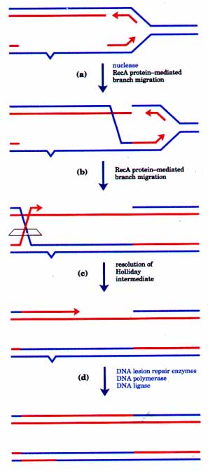
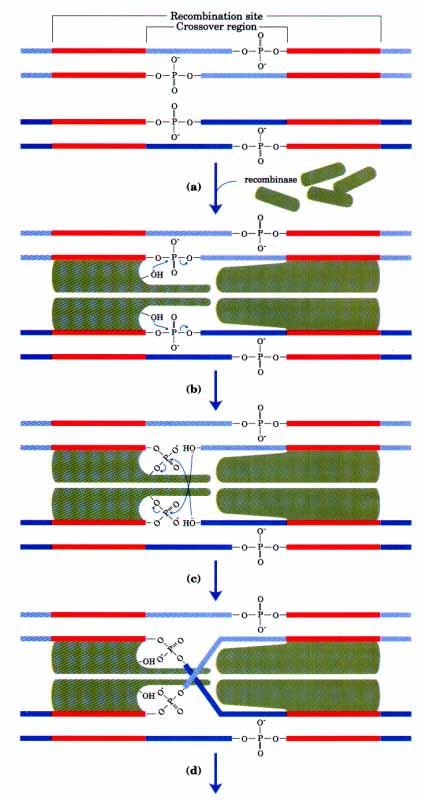
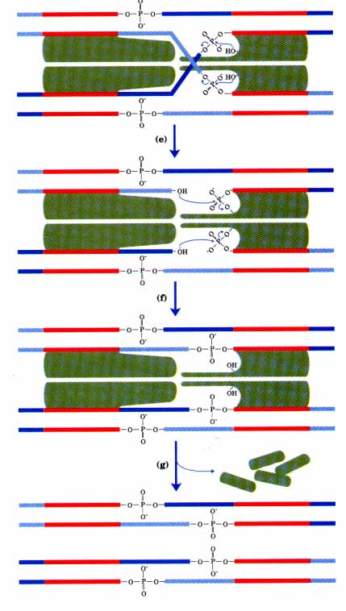
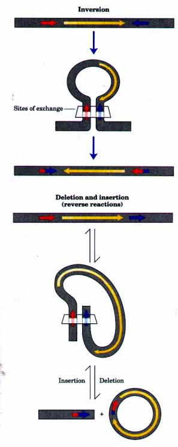
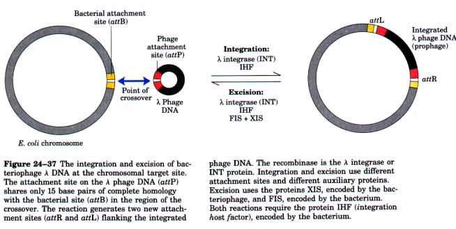
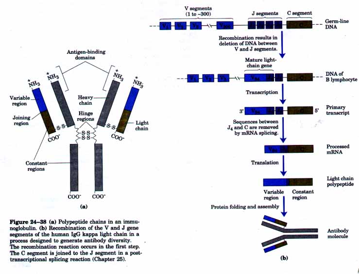
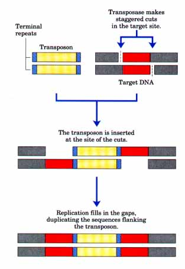
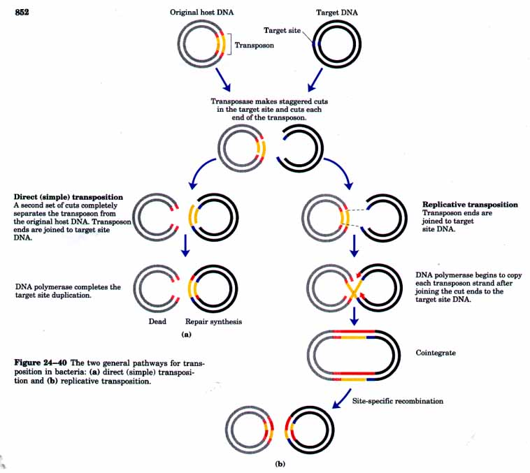

| Recombination provides an avenue for
accurate DNA repair when the necessary sequence
information is not available from a strand paired with
the damaged strand (see Fig. 24-27). To illustrate the
role of recombination in DNA repair, we will examine the
fate of lesions encountered during normal replication and
left behind unreplicated in single-stranded DNA (see
Figs. 24-24, 24-27). Repair of these lesions is called
postreplication repair, and in E. coli this
process requires RecA protein. A plausible pathway for postreplication repair is presented in Figure 24-34. A lesion in an unpaired DNA strand cannot be excised, because this would leave breaks in both DNA strands, an outcome that could be lethal to the cell. To prevent chromosomal breakage and allow for repair, the region containing the lesion must acquire a complementary strand. The recombination pathway makes use of the homologous DNA on the other leg of the replication fork. A RecA protein-mediated strand-exchange reaction transfers an undamaged complementary strand from the homologous DNA, converting the region containing the lesion into heteroduplex DNA. A notable property of RecA proteinmediated DNA strand exchange is that it proceeds efficiently past most DNA lesions with the aid of energy supplied by ATP hydrolysis. Once the lesion is made part of a duplex, the damage can be readily repaired. The repair of lesions of this type is clearly a major function of the homologous recombination system of every cell. |
 Figure 24-34 Model for the role of RecA protein in postreplication repair. (a) A region of singlestranded DNA containing a lesion remains unreplicated. (b) A RecA protein-mediated strand exchange transfers a complementary strand from the homologous DNA. (c) A RecA protein-mediated branch migration results in formation of a Holliday intermediate, which is then cleaved. (d) The lesion can now be repaired,.and the transferred strand can be replaced by DNA polymerase and ligase activities. |
We now turn from general recombination, which can involve any two homologous sequences, to a very different type of recombination that is limited to specific sequences. Site-specific recombination reactions occur in virtually every cell, but their functions are specialized and vary greatly from one species to the next. These functions include the regulation of expression of certain genes, the promotion of programmed DNA rearrangements that occur during development in many organisms, and DNA rearrangements tied to the replication cycle of some viral and plasmid DNAs, as illustrated later. A sitespecific recombination system consists of an enzyme called a recombinase and a short (20 to 200 base pairs, depending on the system) unique DNA sequence where the recombinase acts (the recombination site). Some systems also include one or more auxiliary proteins that regulate the timing or outcome of the reaction.
From in vitro studies of more than a dozen site-specific recombination systems, some principles have emerged. The fundamental reaction pathway for many systems is illustrated in Figure 24-35. A recombinase recognizes and binds to each of two recombination sites on different DNA molecules or within the same DNA. One DNA strand in each site is cleaved at a specific point within the site, and the recombinase becomes covalently linked to the DNA at the cleavage site through a phosphotyrosine (sometimes phosphoserine) bond. The transient protein-DNA linkage preserves the phosphodiester bond lost in cleaving the DNA, and high-energy cofactors such as ATP are unnecessary in subsequent steps. The cleaved DNA strands are rejoined to new partners, with new phosphodiester bonds created at the expense of the protein-DNA linkage. The result of this initial breakage and rejoining process is a Holliday intermediate. To complete the reaction, the process must be repeated at a second point within each of the two recombination sites. In some systems both strands of each recombination site may be cut concurrently and rejoined to new partners without the Holliday intermediate. The exchange in each case is reciprocal and precise so that the recombination sites are regenerated after the reaction. In summary, the recombinase can be viewed as a site-specific endonuclease and ligase in one package.
  |
Figure 24-35 A site-specific recombination reaction. (a) A recombinase binds to a specific sequence or recombination site. (b) The DNA is cleaved at specific points within the sequence. The nucleophile is the OH group of an active-site Tyr residue, and the product is a covalent phosphotyrosine link between protein and DNA. (c) The two parts of the site are rejoined to new partners. This first cleavagelexchange results in a Holliday intermediate. (d) An isomerization step moves the crossover to the point where a second cleavage/exchangen (e, f, g) completes the reaction by a reversal of the first three steps. The original sequence of the recombination site is regenerated, but the DNA flanking the site on either side is recombined. Areas in red denote sequences identical in the two DNAs. Note that the size of the crossover region has been exaggerated in this drawing. |
| The sequences of recombination sites
recognized by these recombinases are partially asymmetric
(nonpalindromic), and the two recombining sites are
aligned in the same orientation for reaction by the
recombinase. The reaction can have several outcomes,
depending on the relative location and orientation of the
recombination sites (Fig. 24-36). If the two sites are on
the same DNA molecule the reaction will result in either
inversion or deletion of the DNA between them, depending
on whether the sites have the opposite or the same
orientation, respectively. If the sites are on different
DNAs the recombination is intermolecular, and an
insertion reaction occurs if one or both of these DNAs is
circular. Some systems are highly specific for one of
these reactions (e.g., inversions) and will not act on
sites in the wrong relative orientation. The first site-specific recombination system identified and studied in vitro was that encoded by the bacteriophage ?. When d phage DNA enters an E. coli cell, a complex series of regulatory events ensues that commits the DNA to one of two fates: either it is replicated and used to produce more bacteriophages (in which case the host cell is destroyed), or it is integrated into the host chromosome where it can be replicated passively along with the host chromosome for many cell generations. Integration is accomplished by a phage-encoded recombinase called the ~ integrase, acting at recombination sites (attachment sites in the bacteriophage .~ system) on the phage and bacterial DNAs called attP and attB, respectively (Fig. 24-37). Several auxiliary proteins also are used in this reaction, some encoded by the bacteriophage and others by the bacterial host cell. Note that a site-specific recombination reaction (Fig. 24-35) is chemically symmetric in terms of the chemical bonds present before and after, and it should have an equilibrium constant of 1.0. A major function of the auxiliary proteins in d integration is to alter this equilibrium by permitting integration andlor preventing the reverse reaction (excision). The mechanism by which this is accomplished is not understood in detail. When the bacteriophage DNA must eventually be excised from the chromosome (which occurs when the cell is subjected to a variety of environmental stresses), the sitespecific excision reaction uses a different set of auxiliary proteins (Fig. 24-37). |
 Figure 24-36 Possible outcome of site-specific recombination, depending on location and orientation of recombination sites (red and blue) in a doublestranded DNA molecule. Inversion and deletion and insertion are illustrated. Orientation here refers to the order of nucleotides in the recombination site, not the 5'~3' direction. |
The use of site-specific recombination to regulate gene expression will be considered in Chapter 27.

An important example of a programmed recombination event that occurs during development is the generation of immunoglobulin genes from gene segments that are separate in the genome. Immunoglobulins (or antibodies), produced by B lymphocytes, are the foot soldiers of the vertebrate immune system-the molecules that bind to infectious agents and all substances foreign to the organism. A mammal such as a human is capable of producing many millions of different antibodies with distinct binding specificities. However, the human genome contains only about 100,000 genes. Recombination allows an organism to produce an extraordinary diversity of antibodies from a relatively small amount of DNA-coding capacity.
Vertebrates generally produce multiple classes of immunoglobulins. To illustrate how antibody diversity is generated, we will focus on the immunoglobulin G (IgG) class from humans. Immunoglobulins consist of two heavy and two light polypeptide chains (Fig. 24-38a).Each chain has a variable region with a sequence that differs greatly from one immunoglobulin to the next, and another region that is virtually constant within a class of immunoglobulins. There are also two distinct families of light chains, called kappa and lambda, which differ somewhat in the sequences of their constant regions. For each of the three types of polypeptide chain (heavy chain, and kappa or lambda light chain), diversity in the variable regions is generated by a similar mechanism. The genes for these polypeptides are divided into segments, and clusters containing multiple versions of each segment exist in the genome. One version of each segment is joined to ereate a complete gene.

The organization of the DNA encoding the kappa light chains of human IgG and the process by which a mature kappa light chain is generated are shown in Figure 24-38b. In undifferentiated cells, the coding information for this polypeptide chain is separated into three segments. The V (uariable) segment encodes the first 95 amino acid residues of the variable region, the J (joining) segment encodes the remaining 12 amino acid residues of the variable region, and the C segment encodes the constant region. There are about 300 different V segments, 4 different J segments, and 1 C segment. As a stem cell in the bone marrow differentiates to form a mature B lymphocyte, one V and one J are brought together by site-specific recombination. This is effectively a programmed DNA deletion event, and the intervening DNA is discarded. There are 300 x 4 = 1,200 possible combinations. The recombination process is not as precise as the site-specific recombination described earlier, and some additional variation occurs in the sequence at the V-J junction that adds a factor of at least 2.5 to the total variation possible, so that about 2.5 x 1,200 = 3,000 different V-J combinations can be generated. The final joining of this V-J combination to the C region is accomplished by an RNA-splicing reaction after transcription (Fig. 24-38b). RNA splicing will be described in the next chapter. The genes for the heavy chains and lambda light chains are formed similarly. For heavy chains, there are more gene segments and more than 5,000 possible combinations. Because any heavy chain can combine with any light chain to generate an immunoglobulin, there are at least 3,000 x 5,000 or 1.5 x 10~ possible IgGs. Additional diversity is generated because the V sequences are subject to high mutation rates (of unknown mechanism) during B-lymphocyte differentiation. Each mature B lymphocyte produces only one type of antibody, but the range of antibodies produced by different cells is clearly enormous. The enzymes that catalyze these gene rearrangements have not been isolated, but sequences critical to the V-Jjoining process that are presumably recognized by these enzymes have been identified.
This recombination process helps to illustrate the principle that recombination does not destroy the integrity of the genetic material that the replication and repair processes attempt to maintain. Here we see a precisely orchestrated process that occurs only in specialized cells (germ-line DNA is not affected) and enables the organism to make much more efficient use of its genetic information resource.
Finally, we consider the recombination of transposable elements or transposons. Transposons are segments of DNA, found in virtually all cells, that move or "hop" from one place on a chromosome (the donor site) to another on the same or a different chromosome (the target site). No homology is usually required for the movement, called transposition, to occur. The new location is chosen more or less randomly. Because insertion of a transposon in an essential gene could kill the cell, the events are tightly regulated and occur very infrequently (perhaps once in a million cell divisions).
There are two classes of transposons in bacteria. Insertion sequences (simple transposons) contain only the sequences required for their transposition and the genes for proteins (transposases) that promote the process. Complex transposons contain one or more genes besides those needed for transposition. These additional genes often confer resistance to antibiotics. The spread of antibiotic-resistance elements through disease-causing bacterial populations, mediated in part by transposition, is rendering some antibiotics ineffectual (p. 796).
| Bacterial transposons vary in structure,
but most have short repeats at the two ends of the
element that serve as binding sites for the transposase.
When transposition occurs, a short sequence at the target
site (5 to 10 base pairs) is duplicated to form an
additional short repeat flanking each end of the inserted
transposon (Fig. 24-39). These short terminal repeats
reflect the cutting mechanism used to insert a transposon
into the DNA at a new location. There are two general pathways for transposition in bacteria (Fig. 24-40). In direct or simple transposition, cuts are made on each side of the transposon to excise it, and the transposon moves to a new location, leaving a double-stranded break in the DNA from which it came. At the target site, a staggered cut is made, the transposon is spliced into the break, and some DNA replication is needed to duplicate the target site sequence (Fig. 24-40a). In replicative transposition, the entire transposon is replicated so that a copy is left behind in its original donor location (Fig. 24-40b). An intermediate in the latter reaction is a cointegrate, in which the donor region is covalently linked to DNA at the target site. Two complete copies of the transposon are present in this intermediate, arranged in the same relative orientation in the DNA. This intermediate is converted to products in some well-characterized transposons by site-specific recombination in which specialized recombinases promote the required deletion reaction. |
 Figure 24-39 Duplication of the DNA sequence at a target site when a transposon is inserted. The duplicated sequences are shown in red. These sequences are generally only a few base pairs long, and their size (relative to that of a typical transposon)is greatly exaggerated in this drawing. |
Transposons are aIso found in eukaryotes. These are structuralIy similar to the bacterial transposons, and some utilize similar transposition mechanisms. However, in some cases the mechanism of transposition is quite different and appears to involve an RNA intermediate. These transposons will be described in the next chapter, in which we leave DNA metabolism and move to a discussion of RNA.
